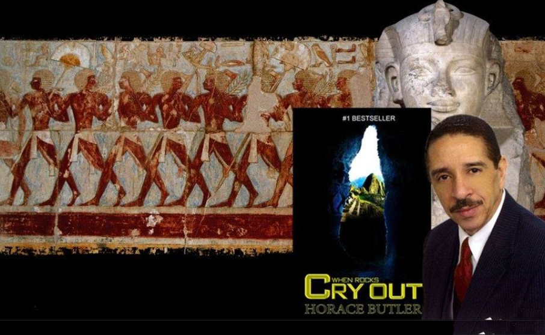

Horace Butler
I bought this hard cover limited-edition issue of When Rocks Cry Out many years ago.
I actually bought a copy that was signed by the author, Horace Butler — the Black man featured on this Black History Monthly website. Soon after buying the signed hard cover, I bought another hard cover copy. This one was not signed.
I had been studying When Rocks Cry Out by Horace Butler for months before I bought the limited hard cover editions. We were reading the paperback version.
There was mention of the hard cover, and for months you would see copies available online. You cannot find them anymore. They are very rare.
Since I had two copies, I listed them for sale at my online store. The unsigned version was listed for $900. The signed version was listed for $3,000.
I was reading and studying the paperback (link here).
It has been over 15 years since I began studying When Rocks Cry Out. We formed a group called The Serpent Union back in the day. Mr. Horace Butler was an actual member of the group and gave us so much information that wasn’t in the book, we undertook studying it like it was our job. It was one of the best times of my life.
The gain of access to such deep and unknown ancient Black history of the Americas is so valuable! I eventually raised the price of the hard cover limited edition from $900 to $2,900.
I sold it for $2,500.
After realizing what I had done (selling such an important piece of ancient Black history), I raised the price of the signed copy to $48,000. I didn’t want to part with it — but if someone was willing to pay $48K, I’d make an exception.
When Rocks Cry Out is my favorite book. I restarted The Serpent Union for anyone who wants to study this book with me. Hopefully, Mr. Butler may grace the group again sometime in the future.
Mr. Butler wrote that the holy city called Jerusalem in the Bible was surrounded by mountains. The city was built in high mountains.
That fact had been overlooked — or ignored — for over 500 years. Jerusalem is a key city to all three of the world’s major religions.
Mr. Butler wrote that Jerusalem was a Black city. Built by Black people. He claimed it was in the high mountains of Peru, South America. Sites like Machu Picchu and Sacsayhuamán match biblical measurements down to the cubit.
He even went to a museum in Europe to locate an ancient measuring tool to prove it.
This is a HUGE accomplishment for Black history.
Mr. Butler has sacrificed his time and wealth to recover the lost, hidden, stolen, and gatekept ancient Black history of the Americas — including Biblical Black history.
He writes in When Rocks Cry Out that many Black preachers and scholars lack the courage to tell the truth about these discoveries.
Supporting Biblical References
Psalm 48:2–3
1 Great is the Lord, and greatly to be praised in the city of our God, in the MOUNTAIN of his holiness.
2 Beautiful for situation, the joy of the whole earth, is mount Zion, on the sides of the north, the city of the great King.
Psalm 125:1–2
1 They that trust in the Lord shall be as mount Zion, which cannot be removed, but abideth for ever.
2 As the MOUNTAINS are round about Jerusalem, so the Lord is round about his people from henceforth even for ever.
Isaiah 40:9
O Zion, that bringest good tidings, get thee up into the HIGH MOUNTAIN...
Isaiah 52:7
How beautiful upon the MOUNTAINS are the feet of him that bringeth good tidings...
Psalm 87:1–3
1 His foundation is in the holy MOUNTAINS.
2 The Lord loveth the gates of Zion more than all the dwellings of Jacob.
3 Glorious things are spoken of thee, O city of God. Selah.
Isaiah 2:2–4
2 ...The MOUNTAIN of the Lord’s house shall be established in the top of the MOUNTAINS...
3 ...Come ye, let us go up to the MOUNTAIN of the Lord...
4 ...Nation shall not lift up sword against nation, neither shall they learn war any more.
Zion is the City of David. The Bible says Zion is in HIGH MOUNTAINS.